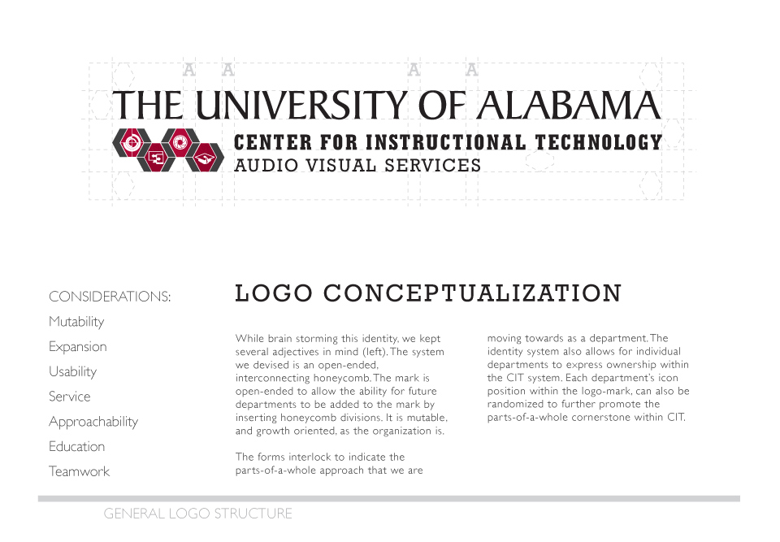
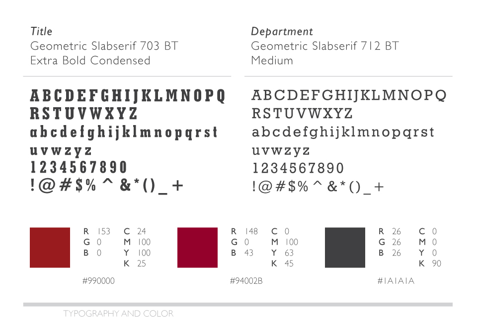
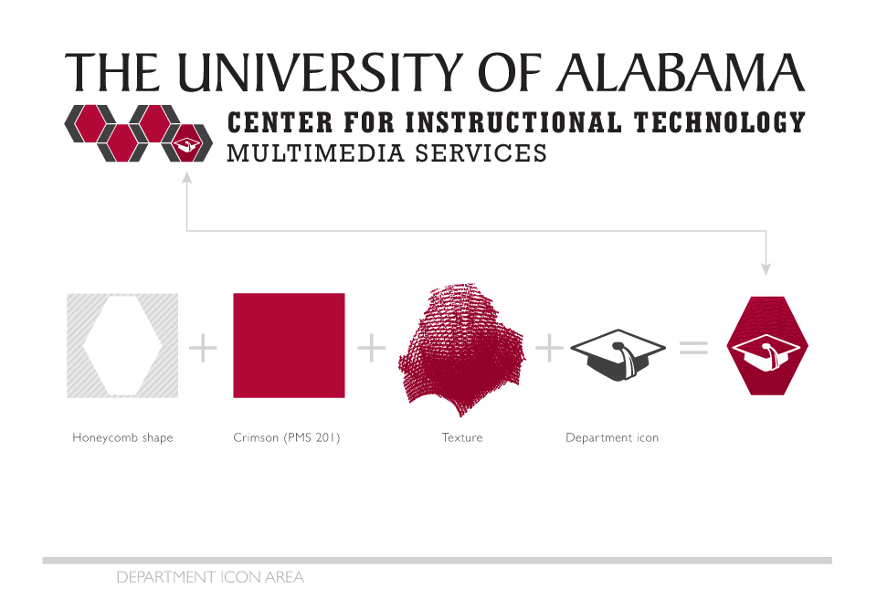
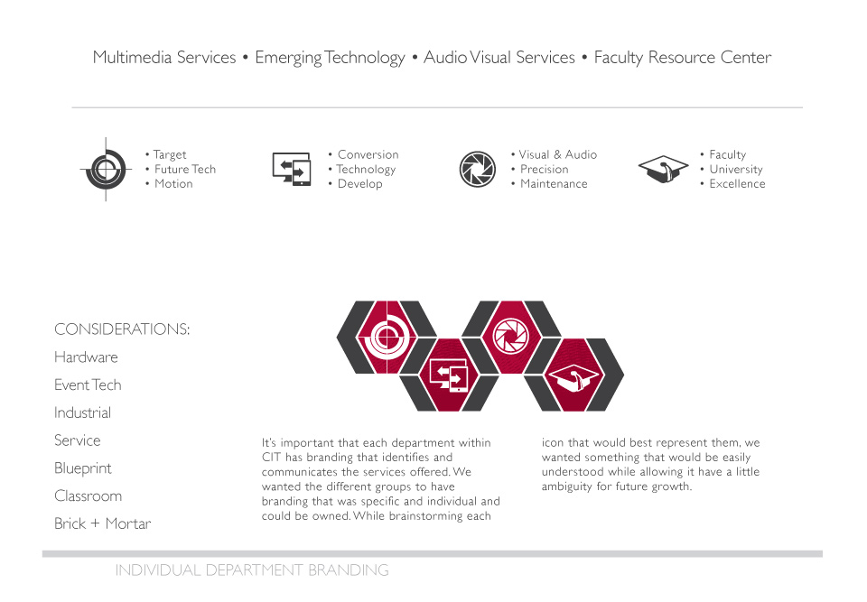
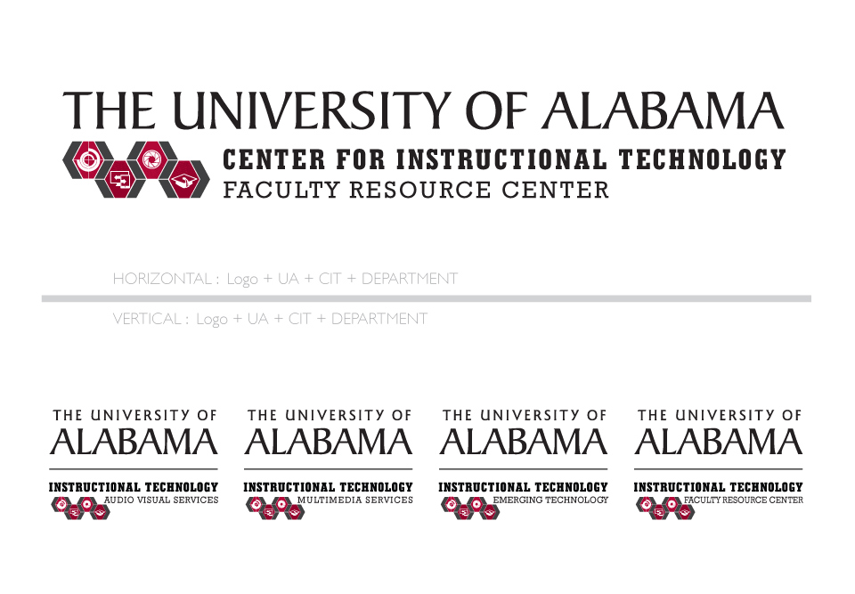
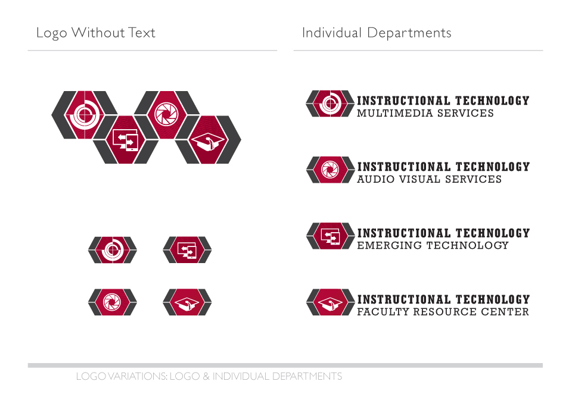

When The University of Alabama Center for Instructional Technology (CIT) became its own entity, they needed a way to distinguish themselves from other departments on campus. CIT is an umbrella department comprised of four smaller divisions. For the rebranding project, I worked with a team to develop the idea of a honeycomb design as a way to represent the network of connections and interactions between the divisions that ultimately combine to form CIT.
Identity, Logo, Rebranding - UA Center for Instructional Technology - March 2012
     